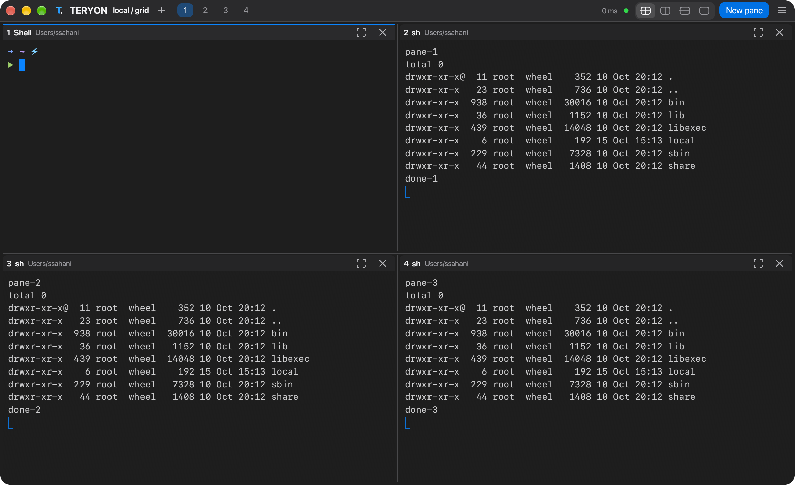
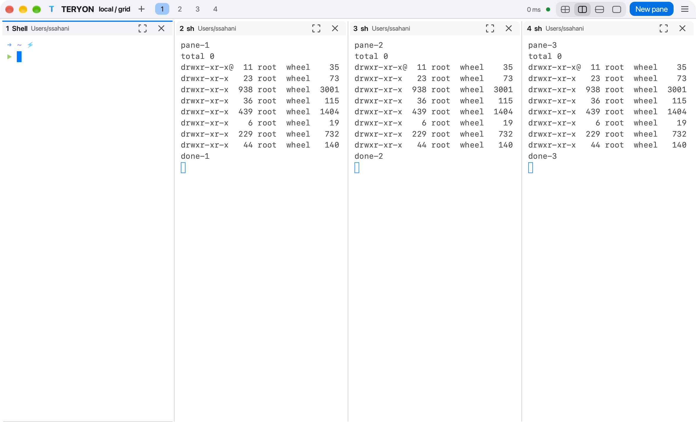

Shells that outlive your connection. Close the lid, switch networks, come back tomorrow — everything is exactly where you left it.


A small per-user service on your Mac mini or Linux host owns the terminals. Your laptop just connects over the OpenSSH you already trust — no new ports, no new accounts.
Built for the way you actually use a headless Mac mini.
Disconnect, sleep, or crash the client. Reattach to the same live shells with capped-backoff reconnect.
Single, stacked, side-by-side or 2×2 grid with draggable dividers, keyboard focus and resize, zoom and dimmed unfocused panes.
Hop between workspaces in one window. Background tabs keep streaming.
Every theme repaints colors 0–15, so ls, git and editors look right everywhere.
One controller per workspace, server-enforced read-only viewers, input sequence numbers, no replay of uncertain input.
teryon record writes an asciicast v2 file — private, and never overwrites.
doctor --fix checks the host and installs a binary you supply, after asking.
One command shows every configured host: reachability, system, workspaces and panes.
Fonts, cursor, opacity and every key binding live in config.toml and apply the moment you save. teryon config --check validates it.
Word, line and block selection, wheel scrollback, mouse reporting for vim and tmux, clickable links.
A graphite header, a blue T with its cursor, and file-type colors that just work.
T▪ TERYON ● connected · mini.local · fluxvm ➜ ~/projects ls -la drwxr-xr-x teryon/ netra/ zyvor-site/ -rwxr-xr-x deploy.sh current -> releases/42 -rw-r--r-- backup.tar.gz demo.mov ➜ ~/projects # Ctrl+Space then z zooms a pane ➜ ~/projects █
No sidebar, no status bar: a single 30 px bar with your tabs, panes and layout, merged into the window title bar. It follows your macOS accent color. Optional, GPU-rendered, with SF Pro loaded straight from the system.
Build the desktop appMac27, Apple, Tokyo Night, Catppuccin, Dracula, Nord and more. teryon themes --export wezterm NAME gives your terminal the same palette.
Requires Rust, macOS or Linux, and a UTF-8 terminal.
Press Ctrl+Space then ? for help. Ctrl+Space → d detaches; your shells keep running.